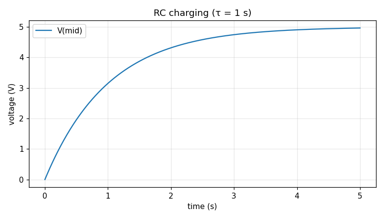
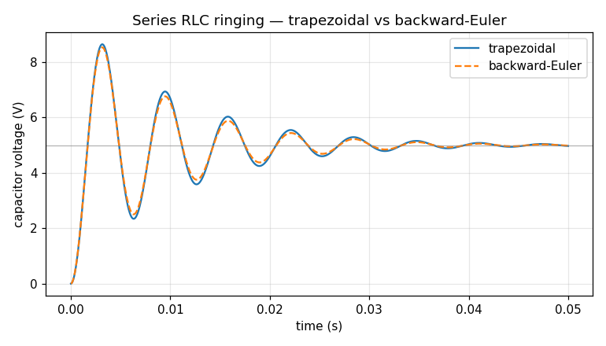
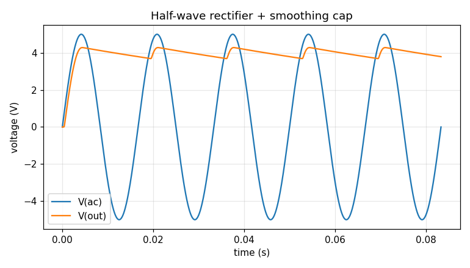
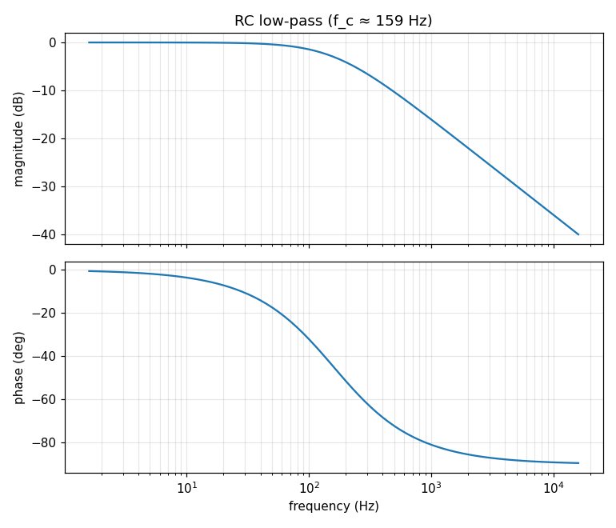
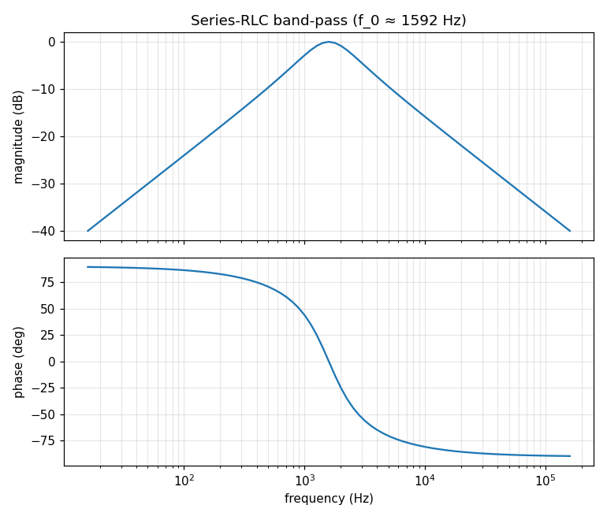
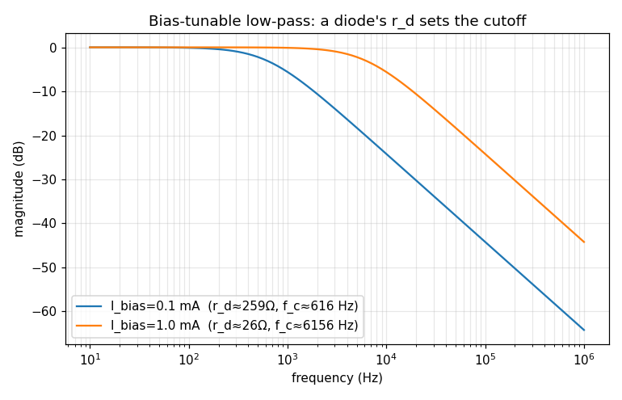
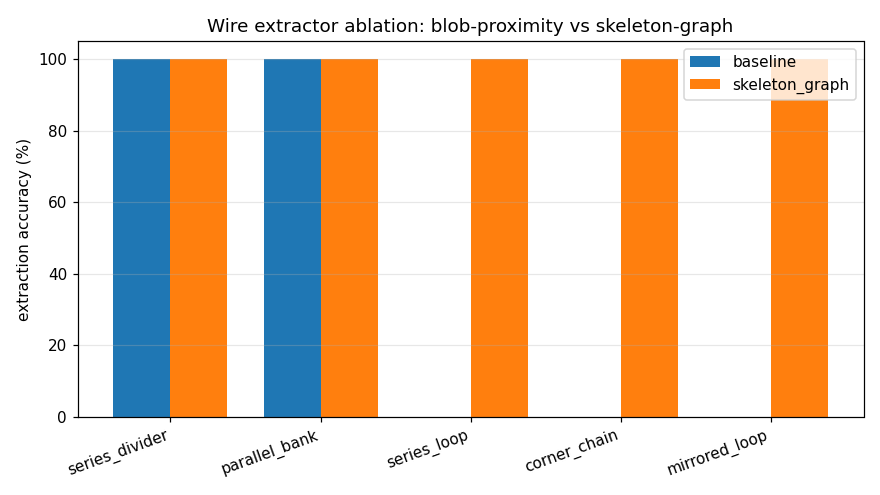
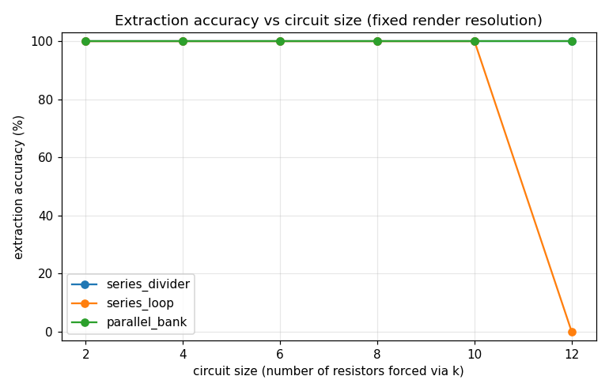
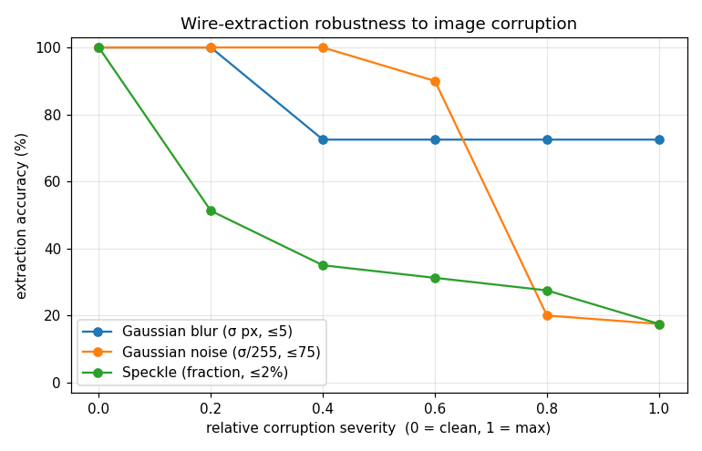

Hand-drawn circuits, solved from first principles.
A pipeline that reads a circuit sketched on paper, rebuilds it as a netlist,
and solves it with a Modified Nodal Analysis engine I wrote from scratch — then checks
every answer against industry-standard SPICE and closed-form theory.
Project the solved voltages back onto the live image.
after detector
02One solver core, four modes
Everything is built on a single trusted linear solve using companion models —
so there is only ever one piece of linear algebra to validate.

Transient. Capacitors/inductors become a resistor + source each time
step. The RC curve matches the analytic V(1−e^(−t/τ)) to within a hair.

RLC ringing. An underdamped series-RLC step response — overshoot and
decay, the dual companion model for inductors at work.

All three at once. A half-wave rectifier with smoothing cap exercises
transient, nonlinear diodes, and a time-varying source in one simulation.

AC / frequency domain. The same MNA core run with complex impedances.
The RC low-pass hits exactly −3 dB and −45° at its cutoff.

Band-pass. A series-RLC band-pass peaks at f₀ = 1/(2π√LC),
matching the closed-form result.

Small-signal AC. Linearise a diode at its DC bias (the "26 mV/I" rule)
→ a filter whose cutoff tunes with bias current, 10:1.
03Measured, not asserted
The vision half is measured by graph isomorphism — an extraction counts
as correct only if its netlist is electrically equivalent to ground truth.

Ablation. The first extractor was layout-overfit (40%). Rebuilding it
around a real wire graph took it to 100% with no
regressions — the kind of before/after number that shows real engineering.

Difficulty curve. 100% up to ~10–12 components, then an honest
resolution-driven fall-off. Building this caught a benchmark artifact masquerading as a
limit — and fixed it.

Noise robustness. Where it breaks: blur is tolerated, noise has a cliff,
and speckle is the weak point — a measured weakness that sets the Phase-2 to-do list.
Solver check
Result
RC at one τ
3.151 V vs 3.16 V
Silicon diode op-point
0.693 V · 4.31 mA
LED op-point
1.805 V · 14.5 mA
RC low-pass @ cutoff
−3.00 dB · −45°
RLC band-pass peak
|H| = 1 @ f₀
Solver vs. theory. Anchored to closed-form
formulas; an ngspice cross-check harness backs it further.
04The honest part
Reporting where it breaks is the point — it's the credibility centre of the project.
What is not claimed yet
No real-photo results yet. Everything here is on synthetic images I generate
and control. Reading photographs of my own handwriting needs the trained detector —
that's the next phase, and the headline claim isn't made until it's done.
Speckle & lighting break the current preprocessing — measured, not guessed
(see the noise curve). The fix (adaptive thresholding) is specified, not yet built.
The ngspice cross-check doesn't yet cover inductor circuits; closed-form
anchors cover those in the meantime.
05Reproducible
Every number and figure above regenerates from a clean checkout with one command.